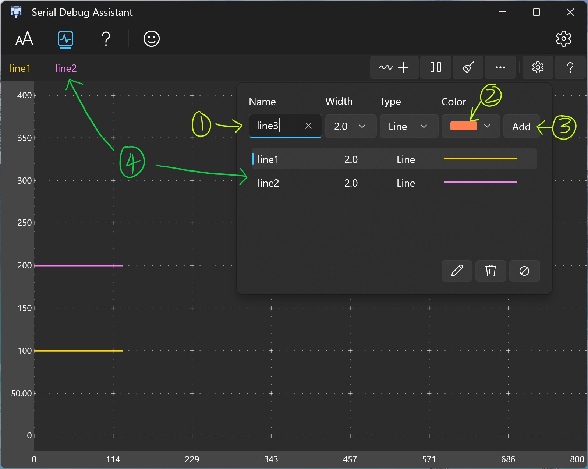

波形绘制
添加波形信息
- 输入波形名称。
- 选择波形颜色。
- 单击添加按钮。
- 刚刚添加的波形名称将显示在波形列表中。
绘制

当串口收到符合波形绘制格式的字符串时，会自动绘制到波形界面。
波形格式
波形名称
等号
值
结束符
X1
=
200
\r\n
| 波形名称 | 等号 | 值 | 结束符 |
|---|---|---|---|
| X1 | = | 200 | \r\n |
使用"\r\n"作为一条绘制的结束
多条波形可使用英文 "," 分割.
这是演示。 波形名称 区分大小写
"X1=100,"
"X1=100\r\n"
"X1=100,X2=200," printf("X1=100,X2=230,");
"X1=100,X2=200\r\n" printf("X1=100,X2=230\r\n");注意使用print()函数时使用“\r\n”来表示回车换行符。 软件发送区可以直接按回车输入回车换行符，不可见但光标会移动到下一行，可以点击十六进制发送会发现字符会有16个十进制数0D 0A 。
坐标轴设置
操作说明
- Y轴坐标自动调整。
开：根据输入数据自动调整坐标范围。
关：需要自己输入坐标最大值和最小值。 - 自动暂停： 波形长度超过一屏显示时，按下鼠标左键并向右滑动，会自动启动波形暂停功能，方便对波形进行观测。
缩放
- Ctrl + 滚轮 -> 波形缩放
- X + 滚轮 -> 单独对X轴坐标范围进行缩放。
- Y + 滚轮 -> 单独对Y轴坐标范围进行缩放。